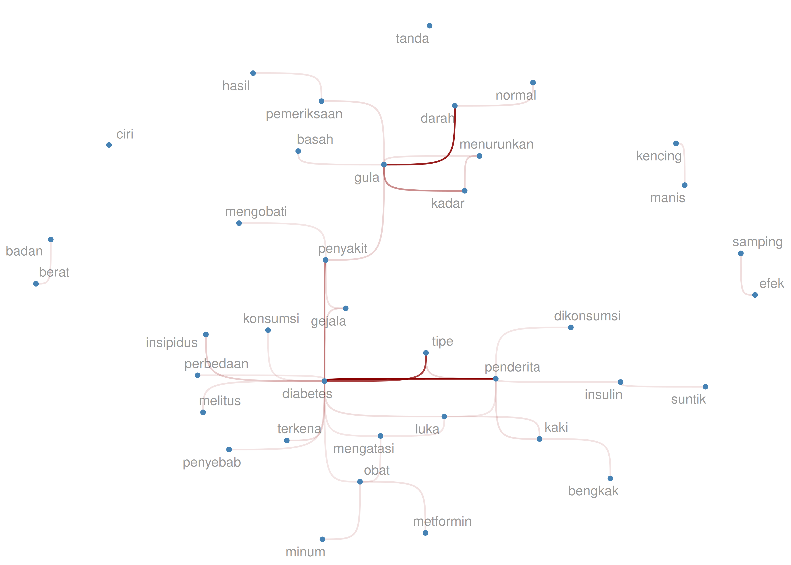

Workflow riset, tiga titik kritis, dan kenapa fondasi yang kuat menentukan kualitas seluruh proses.
Gagal dalam merencanakan berarti merencanakan kegagalan.
Membedakan management problem dan research problem, serta cara menurunkan hipotesis riset yang tepat.
Consumer data, sumber data primer & sekunder, dan bagaimana data bermuara menjadi insights.
When you ask people randomly throughout the day what they are doing (behaviour), 30% of the time there will be mismatch between what they are doing and what they are thinking about.
Bukan sekadar "ngelihatin" — tapi seni membaca realita tanpa menyentuhnya.
Empat kedai, satu pertanyaan: apa yang sesungguhnya terjadi di lapangan?
Bukan wawancara. Bukan FGD. Kami hidup bersama mereka selama seminggu.
Apa yang ditanyakan netizen tentang diabetes? — 446 pertanyaan, tanpa satu pun wawancara.
Jujurly, sebelum masuk perusahaan FMCG, saya benar-benar blank sama sekali terkait apa itu penyakit diabetes.

Observasi bukan alternatif. Observasi adalah pelengkap yang sering dilompati.
Pertanyaan atau diskusi? ikanx101.com